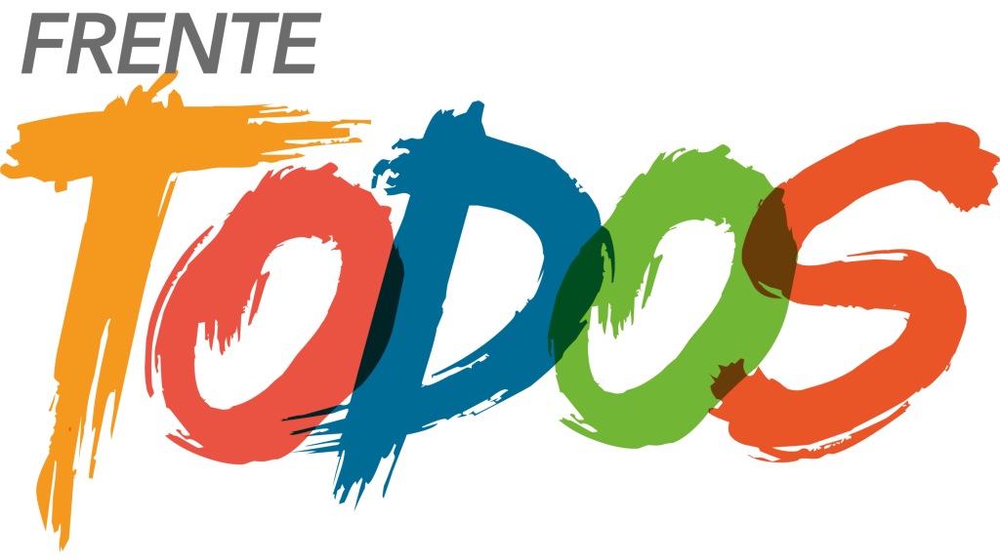

TITULO EJEMPLO
Texto dentro de un parrafo, esto se utiliza para textos largos que nadie nunca lee
Sergio Uñac
Gobernador
Hector Frias
Equipo Tecnico
Juan Manuel Ariza
Desarrollador
Cargar Avales
Consultá el padrón provisorio y de afiliados y cargá los avales que hayas registrado.
Consultá el padrón provisorio y de afiliados y cargá los avales que hayas registrado.